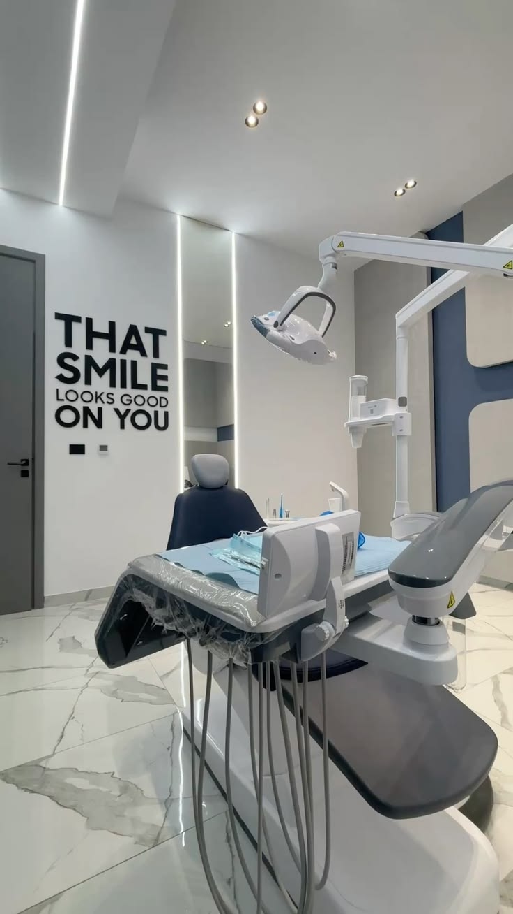
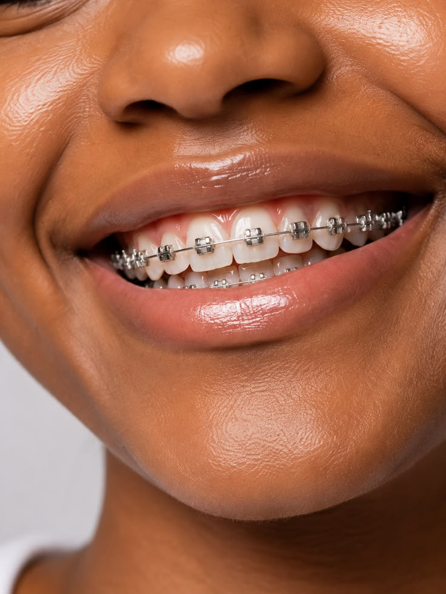
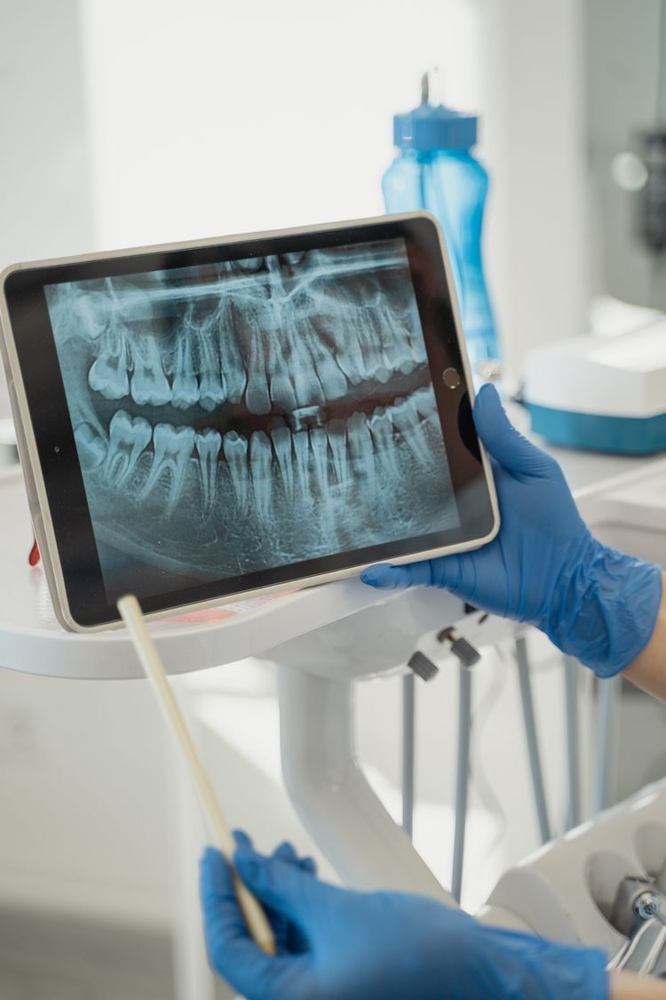
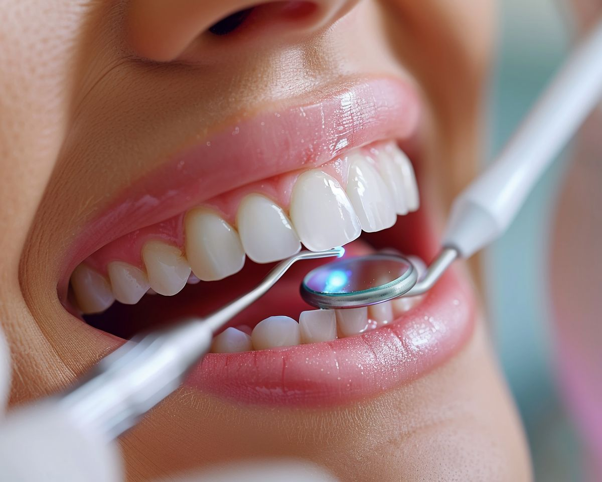
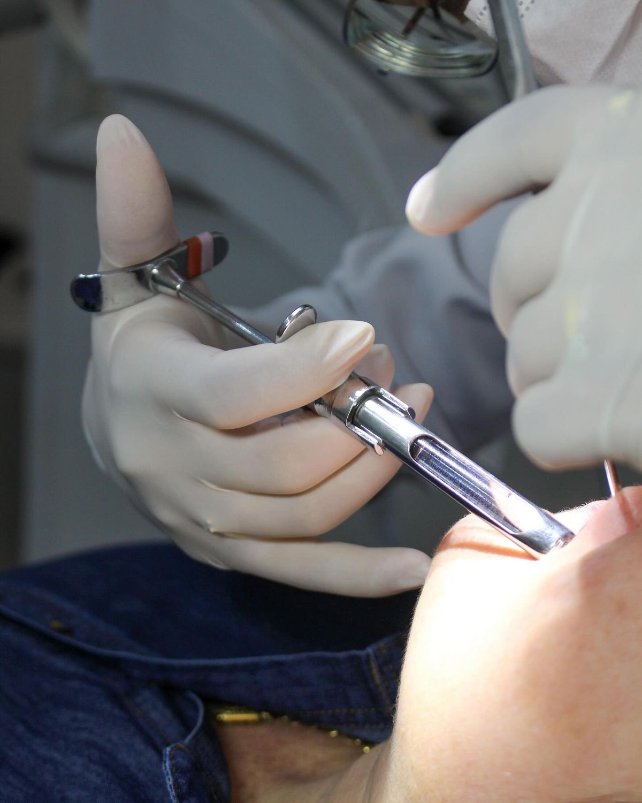
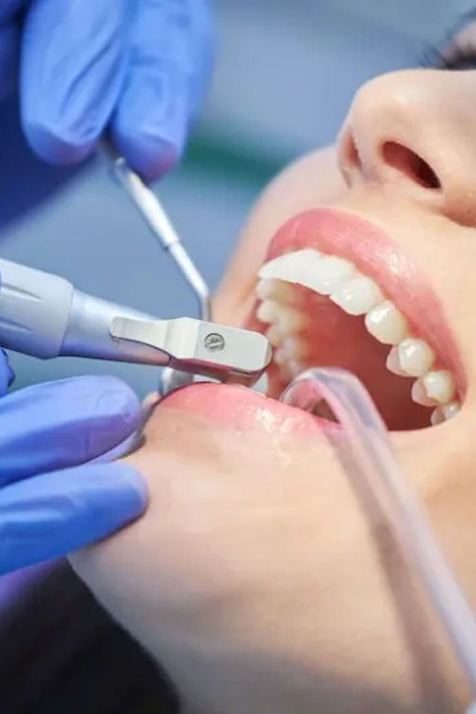

A Solução Definitiva para a Gestão da sua Clínica
Agende consultas, acompanhe pacientes e organize os horários da clínica em um único lugar.
Principais Funcionalidades
- Cadastro e histórico detalhado dos pacientes.
- Agendamento e controle de consultas odontológicas.
- Organização dos horários disponíveis do dentista.
- Controle de consultas confirmadas, pendentes e canceladas.
- Registro dos procedimentos realizados em cada paciente.
- Notificações automáticas para lembrar os pacientes das consultas.

Serviços odontológicos
Limpeza dental
Limpeza profissional para manter a saúde e a higiene dos dentes.

Aparelho ortodôntico
Tratamento para corrigir o posicionamento dos dentes.

Restauração
Recuperação de dentes danificados ou com cáries.

Clareamento dental
Procedimento para deixar os dentes mais claros e uniformes.

Tratamento de canal
Tratamento para preservar dentes com problemas internos.

Avaliação odontológica
Consulta para avaliar a saúde bucal e planejar tratamentos.
Tabela de Serviços e Produtos
| Serviço / Produto | Descrição | Preço Estimado |
|---|---|---|
| Limpeza Dental | Limpeza profissional e avaliação da saúde bucal | R$ 120,00 |
| Clareamento Dental | Procedimento para clareamento dos dentes | R$ 450,00 |
| Restauração | Recuperação de dentes danificados | R$ 180,00 |
| Avaliação Odontológica | Consulta para avaliação e planejamento do tratamento | R$ 100,00 |